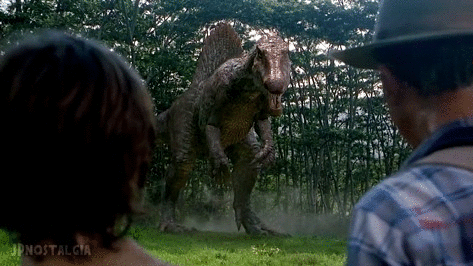

HOME
Jurassic Park III
Jurassic Park III shows renowned paleontologist Dr. Alan Grant (Sam Neill) is struggling for research funding when he is approached by a seemingly wealthy couple, Paul and Amanda Kirby (William H. Macy and Téa Leoni). They offer to fund his research in exchange for a guided aerial tour of Isla Sorna (Site B).
The Kirbys trick Grant and land the plane on the island. They reveal they are actually a divorced, middle-class couple searching for their son, Eric, who disappeared eight weeks earlier while parasailing. Stranded after their plane is destroyed by a Spinosaurus, a predator even larger and more aggressive than the T-Rex. The group must navigate the dangerous jungle to find Eric and reach the coast. They also face a highly intelligent pack of Velociraptors and a terrifying encounter in a Pteranodon aviary.

Company Credits: Universal Pictures, Amblin Entertainment
Release Date: July 18, 2001
Genres: Action, Adventure, Sci-Fi
Rating: PG-13
Running Time: 92 minutes
Jurassic World: Rebirth
Jurassic World: Rebirth Set five years after the events of Jurassic World Dominion, the film follows a world where the planet's ecology has become largely inhospitable to dinosaurs. The remaining dinosaur population exists in isolated, tropical equatorial environments.
The story focuses on a top-secret mission led by covert operations expert Zora Bennett (Scarlett Johansson). Her team is hired by a pharmaceutical company to extract DNA from the three most massive prehistoric creatures across land, sea, and air. These samples are believed to hold the key to a groundbreaking, life-saving medical drug. During the mission, Zora's team encounters a shipwrecked family and becomes stranded on a forbidden island that once housed an undisclosed research facility for InGen, where they uncover a monster hidden for decades.

Company Credits: Universal Pictures, Amblin Entertainment
Release Date: February 29, 2024
Genres: Action, Adventure, Sci-Fi
Rating: PG-13
Running Time: 134 minutes